My Aim:
To create a simple pizza program which enables users to order, review and update their pizza choices, responding accordingly to any user errors/unexpected entires.
Sprint One
Sprint One Aim:
To create a main menu for users which runs in a loop, with two options; Review the pizza menu or Quit the program permanently. To create a function which prints the pizza menu when requested, stating both the pizza flavours and their corresponding prices.
Sprint One Planning Board, Code Output and Simple Validations:
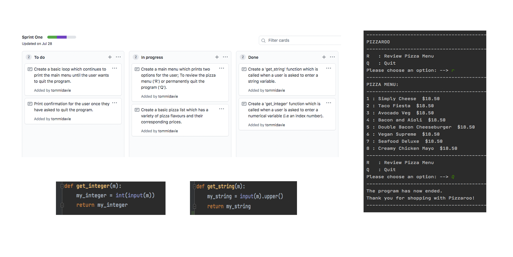Sprint One Overall Reflection:
The first sprint I have completed for my program prints a very basic pizza menu for the customer when requested, along with a list of the pizza prices. The program runs in a loop, which means every time the pizza menu is printed (upon the user request 'r') the user is redirected to the main menu, until the quit option ('Q') is requested. If the user selects to quit the program, the loop terminates and a confirmation message is printed informing the user that the program has ended, and thanking them for shopping with/choosing Pizzaroo. I have also coded 'get_integer' and 'get_string' functions, which provide simple validations (which I will evaluate and build on in future sprints) for the program when the user enters either a numerical or string variable. Regarding the 'get_string' function, I have included code which ensures every string value the user enters (when this function is called) is read as an uppercase letter/word(s). This generates less issues for the user (as when entering an 'r' or 'q' the program will still accept/understand what they mean) - preventing my program from crashing altogether. The 'get_integer' function is not yet being put to use in my program, but will certainly be called in future sprints when the user is able to order a pizza/select an index number from the pizza list. I have not yet run into any errors in my code which I don't intend to fix in later sprints.
Sprint Two
Aim:
To create a function which allows the user to order a pizza from the pizza menu, selecting a flavour and quantity (1 - 5) of choice. To create another function which enables the operator to review their current order status (printing all of the pizza flavours and quantities they have ordered). Incorporate both of these options in the main menu under 'O' for 'Order a Pizza' and 'R' for 'Review my Order'.
Stand-Up 30/7/20 :

Planning for sprint two (and for my entire program) includes a short meeting at the beginning of the working day which questions what we have already completed, what we intend to complete and what is blocking us from doing so. On the 30th of July I had completed and tested the first sprint of my program, and began planning for second sprint. I decided, as seen above, the first focus of my second sprint would be to create a 'customer_order' function - which enables the customer to order pizzas from the pizza menu/list and personalise their pizza order.
Sprint Two Planning Board:

Sprint Two Planning and Testing Evidence:

Above include screenshots of my various stand-ups, code confirmations, and plans and screenshots of the tests I conducted on my program. The first test I conducted included entering the expected user inputs of the pizza flavours and quantities. This meant I ordered 3 Simply Cheese pizzas and 2 Creamy Chicken Mayo pizzas. I reviewed my order and was happy to see that my current order status was correct and had thrown no errors. In the second test I conducted, I made sure to enter all of the unexpected user inputs, to see how my code would react/if it would crash. When I went to review my order, I saw that the program had allowed me to enter pizza quantities of 0 and -1, as well as order a pizza flavour more than once (resulting in pizza duplicates in my order).
An Error I Encountered:

One error which I encountered was if the user entered an index number that did not exist, (such as 66) the program would crash and as it could not find a value in the pizza list which matched the user's input. As there are no validations which can yet prevent the user from entering invalid indexes, my program could not recover from this error and crashed. Consequently, I plan to make validations in the third sprint of my program which provide limits for the user's inputs surrounding indexes and quantities.
Sprint Two Reflection:
What has been successful?
- The user is able to enter the pizza flavour they would like to order and the quantity of which they would like. They can do this more than once by returning to the main menu and clicking the order option once more. They can also review their current order status (the type and quantity of pizzas they have ordered) and will be sent back to the main menu once more, in case they want to add to their order or quit the program.
What are the problems?
- At this stage my program has no validations (as can be seen in the multiple screenshots of tests I have recorded above). This means that the user can enter invalid indexes such as 0 and -1. The customer can also enter the same pizza twice and it is not recognised as the same value (due to the pizzas being ordered on separate occasions, with no code yet allowing the program to scan the customer list for the same pizza). Another issue is that the prices of the pizzas are not calculated and shown when the user reviews their order.
Sprint Three
Aim:
To validate the current version of my program (seen in Sprint Two) ensuring all of the unexpected user inputs are recognised and returned to the user - preventing the program from continung unless their error is resolved.
Sprint Three Planning Board:

Sprint Three Planning and Testing Evidence:

Above is my record of planning and tests I have conducted for the third sprint of my program. As I focused this sprint on validating the pizza indexes and quantities a user can enter, I made sure to enter a wide range of unexpected values in my tests. I began by testing the index values, entering numbers which were well to big (such as 23) - with my code successfully identifying this error, and reiterating the maximum index you can enter (8). I entered a letter (S) instead of an integer, with the program informing me my input must be a number. I also entered a negative number, (-2) with the program informing me my input must be above 0. I then repeated this process for the quantity of pizzas I wanted to order (setting the min and max values to 0 and 5) and found that all of my validations were working correctly. An additional change/vaidation I made and tested was in the main menu. This temporary fix regarded if the user entered an input which did not include any of the letters/options in the main menu. When an invalid anwer is entered, the program prevents the user from continuing and prints an error message. I intend to make further changes/advancements to issue in future sprints.
Sprint Three Reflection:
What has been successful?
- I have successfully incorporated all of the validations I created in my validations file into my main file. This prevents the program from continuing if the user has entered an inappropriate answer. Instances where this would occur (seen in screenshots above) include when the user is selecting an index number or how many pizzas they would like to order. If the customer enters a letter, or a number below 1 or above 5 (the pizza limit suggested in our breif) they are met with an error message which asks them to enter an input which meets these boundaries. The temporary validation fix I have coded into my main menu also works well. This means when a user enters an input which is not included in the main menu options the code returns an error message and prints the main menu once more.
What are the problems?
- At this stage my validations are quite basic and will need to be reevaluated and advanced in later sprints. This is because my code will evolve and will require more specific validations for particular errors and functions. I will also need to create a function to ensure there are no duplicates in the customer's order, as this issue is not yet resolved. Another error mentioned in my previous reflection, is that when reviewing the user's order, there are no pizza prices calculated and printed as of yet.
Sprint Four
Aim:
To calculate and print the price and quantity of each pizza flavour the customer has ordered. To add these values to the total cost and quantity of pizzas of/in the customer's order.
Sprint Four Planning Board:

Sprint Four Planning Evidence:
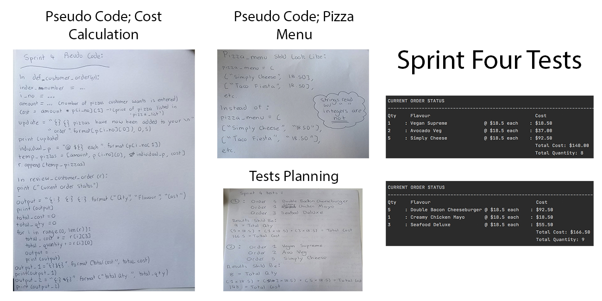
Above is the record of all of my planning for Sprint Four, including the tests I conducted to ensure the program rAn successfully. I began by mapping out the pseudo code for the 'customer_order' and 'review_customer_order' functions, identifying the information in one function and appending/sending it to the other (so it could be printed and communicated back to the user). I also highlighted in my planning how I inteded to change the pizza menu - ensuring all of the prices were read as integers and not strings. I proceeded to plan tests for this sprint, creating specific orders and calculating their total cost and pizza quantities before testing them in my program. As can be seen by the screenshots on the right, my calculations matched with those in the program - printing the correct total cost and quantity of pizzas for the customer.
Running my code through 'Python 3 Style Checker':
As can be seen below, I decided to run my program through a code checker after completing the fourth sprint of my project. I felt this was an appropriate time to do so, as my code has advanced to the point where I am confident no serious crashes will occur. After copy and pasting my program and receiving 10 style issues, I recognised many of these to be doctring and character related. As I had not yet allocated time to comment my code, this was immediately picked up by the style checker and errors were threw. Thankfully, this was an easy fix, and once I commented my work and reduced the character length of particular lines (to below the limit of 79) my code threw no errors and I am now able to progress.
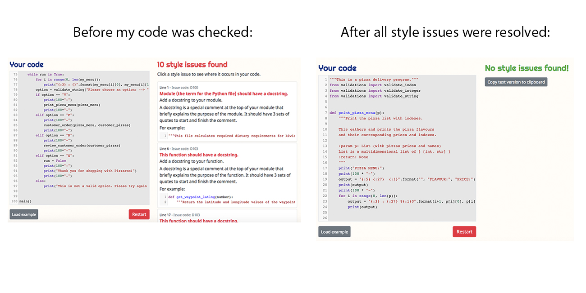Github's Project Management - Project Backlog:
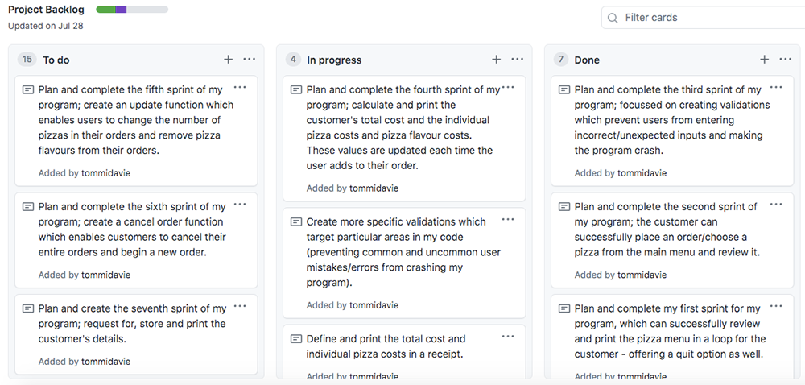
As I create my program, I continuously refer to Github; a website which stores my entire project, (including my planning website and all of the sprint boards I create) at whichever state it was during it's last commit. Github also stores my project backlog, (pictured above) which helps to separate and prioritise different stages of work I need to complete, am currently completing or have already completed. This is an intergral part of any agile development process, and I find it particularly helpful as all of my tasks are arranged in lists from highest to lowest priority. Consequently, whenever I feel uncertain or lost in my work, I can refer to my project backlog, and remind myself what I am currently working towards and what I can do in the mean time to achieve this. The project backlog also allows for lots of creative freedom - as sometimes I will add things which require resources and knowledge I don't necessarily have, however can help inspire and drive new thoughts and ideas. (Examples of this include creating an app or a hologram for the pizza program).
Sprint Four Reflection:
What has been successful?
- I have incorporated code into the 'customer_order' and 'review_customer_order' functions, which helps to successfully calculate and print the user's total cost and quantity of pizzas they have ordered. As the user reviews their order, they can also see the price of every individual pizza (of a particular flavour) as well as the price of each pizza flavour. These prices are updated every time the user orders another pizza flavour. This allows the customer to continue reviewing their order, and observing any additions and changes made (via access to the main menu). The formatting of the program also enables the user's order to be clearly read and understood.
What are the problems?
- I have not yet calculated and added the GST onto the customer's total price, however intend to revisit this in later sprints. There is also yet to be any variety regarding the pizza prices (as they are currently all $18.50). When I incorporate new prices into my pizza list, I assume the code will still be able to successfully calculate the various prices, however cannot be certain until this is completed.
Sprint Five
Aim:
To create an update function which enables the user to change a pizza quantity or remove a pizza flavour from their list/order. To incorporate gourmet pizzas into the pizza menu - broadening the pizza prices to two different values.
Update Function Iterative Decision:
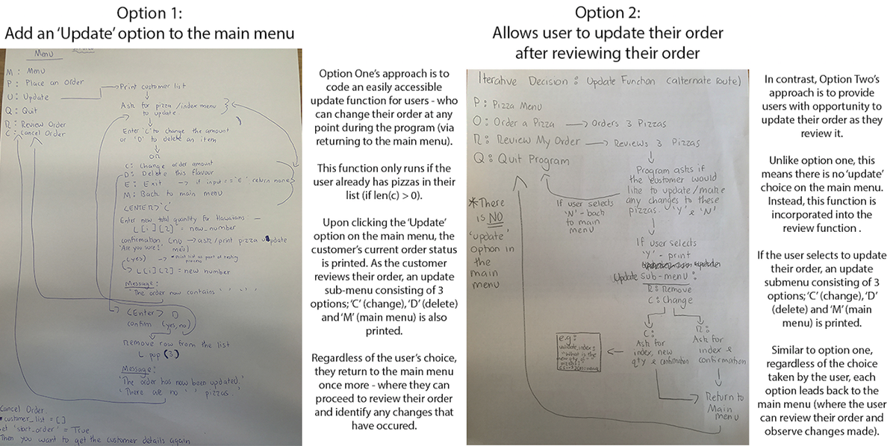
After planning and evaluating both option one and option two's different coding approaches for the update function, I decided that I prefer, and intend to follow through with option one. This is because I like the idea of incorporating an 'Update' option into the main menu, as users can clearly identify how to change/update their orders - without having to navigate through other options in the main menu first. As a result, this generates less confusion/fuss which may arise in it's absence. For example, although option two enabled users to update their orders once they selected to review, if a customer wanted to update their order immediately (via the main menu) they may grow frustrated and give up on the program altogether. Consequently, through selecting option one I am increasing the usability of my program - helping direct users to their intended destinations via the multiple options on my main menu.
Sprint Five Planning Board:
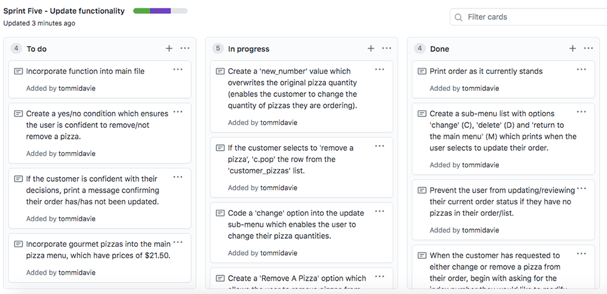
Planning Evidence:
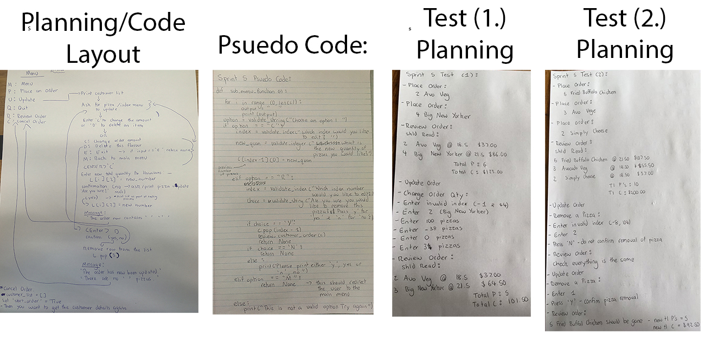
The fifth sprint of my program involved coding and creating an 'Update' function which enables users to change their pizza quantities and remove a pizza flavour from their order. Consequently, this sprint needed to be planned and tested thoroughly, requiring lots of paper work and diagrams. During class discussions, we identified many ways this function could incorporated into our programs, however I felt that adding an 'Update' option into the main menu was most appropriate (as explained above). I decided once the user had selected the 'Update' option, (on the main menu) that a sub-menu would appear - identifying specific ways the user could update their order (e.g changing a pizza quantity or removing a pizza flavour) whilst also offering to redirect the user to the main menu. I also set various limitations regarding the user's index and pizza quantity inputs. This ensures the user has to enter approriate values/responses before continuing. This can all be seen in my tests below (where I purposefully entered unexpected/incorrect user inputs). The planning for my tests can also be seen above - outlining what I expect to happen during each test.
Sprint Five Tests:
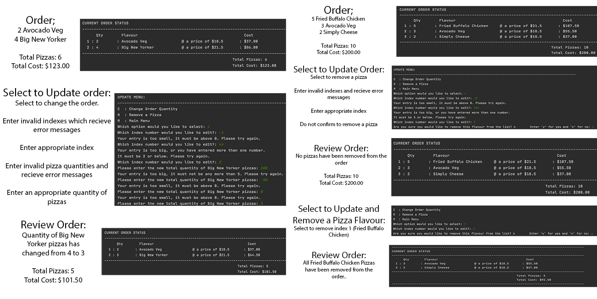
As can be seen above, I planned and conducted two thorough tests on my program, specifically targeting the new update function. Fortunately, both tests were successful and returned what I had anticipated (as seen in my planning screenshots above). The only minor issue I indentified, was an error in my 'remove a pizza confirmation' - which ensures the user is absolutely certain to remove a pizza. This message was supposed to be separated into 2 lines, however due to a printing error in my code did not do so. Thankfully, this was an easy fix which has now been altered. Another minor change I would like to incorporate in future sprints, is confirmation messages for the user, once they have/have not confirmed a change to their order. This can be helpful for users as this confirmation from the program could prevent them from double checking/reviewing their order once more.
Sprint Five Responsive Test With Mr Khouri:
After running various tests on my program by myself, I ran a full test with Mr Khouri to see how it would respond when tested by a customer (as if their order was received over a phone call - like the marking schedule suggests). The program seemed to run well, with few errors. One error which was identified, however, was as soon as the customer's order was reviewed, a test order saved in the program also appeared. This meant I had to individually remove every pizza from this test order, as the customer had not ordered them. Although this posed no issue, when receiving an order over the phone, this is an inconvinience and wastes time. Excluding this, the only other error which occured was there were no confirmation messages once the customer had changed a pizza quantity or removed a pizza (as explanined in the video). Instead, when removing a pizza the customer was immediately redirected to the update sub-menu, (which was not what I had intended) and when changing a pizza quantity the customer was immediately sent back to the main menu. Consequently, I have decided to code confirmation messages for both options and redirect the customer to the update sub-menu afterwards. This would appear much less confusing for the customer as they can feel assured their order has been updated, whilst also being offered opptunity to make any further changes through the sub-menu.
Sprint Five Reflection:
What has been successful?
- I have successfully coded an 'Update' function which allows the customer to change the quantity of pizzas and remove a pizza flavour from their order. They can make more than one change to their order via an 'Update' sub-menu which prints repeatedly once the user selects to 'Update'. These changes also alter the total amount of pizzas the customer has and the total price calculated (which is updated and displayed accurately every time their order is reviewed.) I also added some gourmet pizzas to the pizza menu, broadening the pizza prices to $18.50 and $21.50. As can be seen in my tests, these prices can be calculated and accurately represented in the total cost/receipt for the customer.
What are the problems?
- I do not yet have confirmation messages (as identified in a test above) which confirm the user's order changes, however, I intend to code these in future sprints. The user is still able to enter/order a pizza flavour more than once, without the program recognising they are equal. This creates issues for the 'Update' function as the user can only alter one pizza flavour at a time, and the computer recognises duplicate pizzas as individual flavours. I still do not have a 'Cancel' order function which allows the user to cancel their entire order without having to remove every individual pizza.
Sprint Six
Aim:
To create a function which allows the user to cancel their entire order and return to the main menu.
Sprint Six Planning Board:
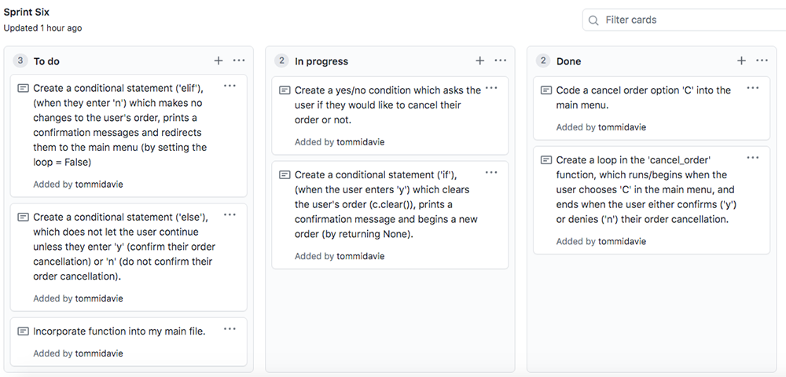
Sprint Six Planning and Testing Evidence:
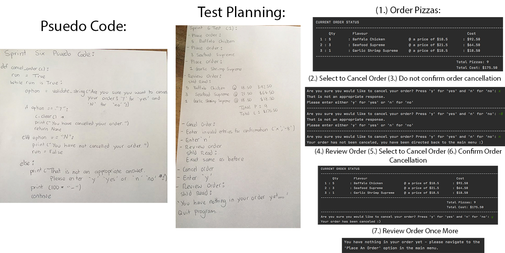
Seeing as sprint six was only focused on the addition of a cancellation function, it did not take as long, nor did it require as much planning and testing. This is because previous classwork and functions have meant I have had to clear values/lists from orders before (such as removing a pizza in the update function). As a result, I was able to accomplish my aim quickly, however still conducted tests (such as the one I have recorded above).
To begin my testing process, I ordered 3 different pizza flavours and reviewed my order to ensure the program had recorded this information correctly. I then selected to cancel my order on the main menu, however, when asked to confirm my order cancellation, I entered 2 unexpected/incorrect inputs, where I was met with 2 error messages and asked to answer again. I proceeded to select 'n', (not confirming the cancellation) returning to the main menu and reviewing my order once more. This ensured my order had not been cancelled, and the program had listened to my request. Finally, I selected to cancel my order again, answering 'y' for 'yes' to confirm it. I then doubled back to review my order, ensuring no pizzas were there. As I did so, I was met with an error message informing me there was nothing in my order yet, and that I needed to order a pizza via the 'Place an Order' option on the main menu, before returning. Whether I confirmed or did not confirm my order cancellation, the program returned confirmation messages which told me what was happening throughout.
Sprint Six Reflection:
What has been successful?
- Users can successfully cancel their orders through the function I have built during this sprint, via seleting the 'C' option on the main menu and confirming their order cancellation. Once their order is cancelled, users are immediately returned to the main menu where they can begin their new order/order new pizzas. If the user tries to either update or review their order with no pizzas in their list, they are met with an error message informing them they do not have anything in their order yet. I have also coded validations into the cancel function, which inform the user what the program is doing - whether they have confirmed their order cancellation or not. If the user enters an unexpected/incorrect input, they are immediately met with an error message which does not let them proceed until an appropriate answer is entered.
What are the problems?
- Although the user can cancel their order, there is not yet any indication that a new order has begun. Instead, the user is returned to the main menu and must review their order to confirm that their previous order has been cancelled. Consequently, in my next sprint I intend to request for and store the user's personal information - which will be asked at the beginning of an order. This means once the user cancels their order, they will be asked to enter their customer details again - informing them all of their information has been wiped and a new order has officially begun.
Sprint Seven
Aim:
Request the customer's information at the beginning of a new order. Store and print this information upon request. Provide delivery and pick up options for the user's pizza order. Add a delivery fee to the user's total cost and print this delivery fee in the receipt.
Sprint Seven Planning Board:
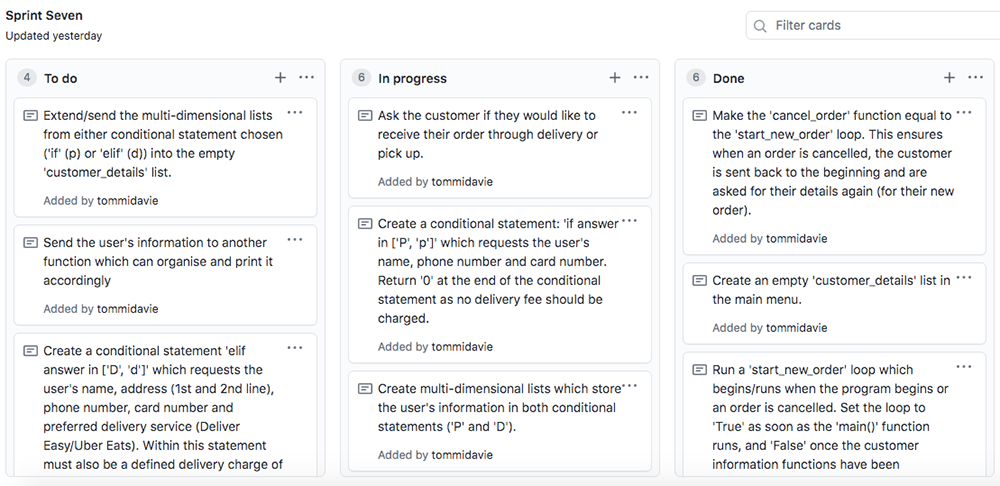
Sprint Seven Planning Evidence:
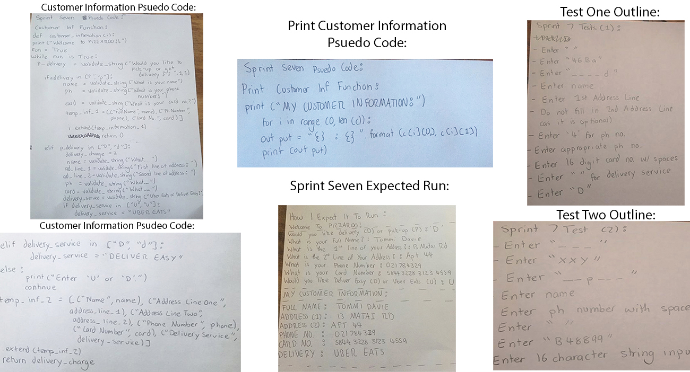
The seventh sprint of my project focuses on requesting for, storing and printing the customer's information - all of which occurs at the beginning of a new order, signifying to the user that their existing order has been cleared (if they had previously started and cancelled one). To accomplish my aim, I indentified two different functions which would need to be made. One for requesting and storing the customer's details, and a separate function for formatting and printing these details. I created basic psuedo code for each of these functions, outlining their main purposes (to receive and relate the customer's information). To accomplish such, I created an empty 'customer_details' list in my main menu. This ensured I could extend/send information recorded and stored in the 'customer_details' function to an empty list. I could then call this empty list in the 'print_customer_deatils' function - relating this information back to the user. As can be seen above, I outlined how the expected code output would be once both functions were completed. I planned and conducted (seen below) two different tests which pushed the 'customer_order' fucntion's limitations (regarding how well the program could respond to unexpected user inputs).
Error (1): Extend Instead of Append
During this sprint, I had issues sending information from the 'customer_details' function to the empty 'customer_details' list (pictured below - with my program continuously crashing once the customer's details were completed). I found this to be a consequence of trying to 'append' the information instead of 'extending' it. Unlike other examples in my code, the append method was not useful in this instance. This is because appending the information would only add one element to the empty list. This proved to be an issue as the 'temp_information' lists I needed to send to the 'customer_details' list were multi-dimensional - causing my program to crash and throw errors every time it ran. Consequently, I opted for the 'extend' method. Through extending the information, the program could successfully add all of the elements from the temporary lists onto the empty 'customer_details' list. This meant the resulting list (which was formatted and printed in a separate function) was a combination of both lists - containing all of the necessary elements (without confusing and causing errors to my code).
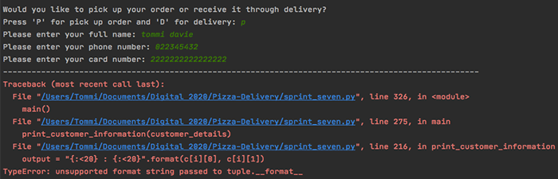
Sprint Seven Tests; Code Input and Output
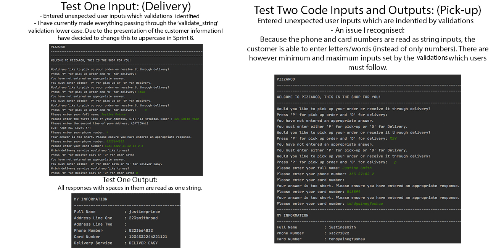
Error (2): Phone and card numbers are read as strings instead of integers
As identified in my tests, (pictured above) another issue the customer details have created, revolve around the user's phone and card numbers. This is because both options are recognised by the program as strings (opposed to integers). This proves to be problematic, as essentially, a customer can enter a string of letters or words (within the minimum and maximum character limitations) as either their phone or card number - without the program identifying any problems/returning error messages. In saying so, I have purposefully selected both options to be read/identified as strings, as if read as integers, the minimum and maximum limitations become very complicated. In conjunction with this, string inputs enable you to replace any spaces in the user's answer (" ") with an enclosed space ("") - integers, however, do not. I believe this is essential for both phone and card numbers, as many customers will enter spaces into their answers naturally (seen in my tests above). Because the limitations are very strict for both options, (especially card numbers which must be 16 characters) it can become very aggravating for users, very quickly, if the program continues declining their card number as their spaces (" ") are counted as characters. Consequently, I have choosen both details to be read as strings, assuming customer's will generally enter numbers instead of letters for their phone and card details - completing their customer information in a normal, acceptable fashion so their order can be successful.
Screen capture from sprint eight showing errors in the phone and card numbers:
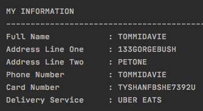Customer Details Iterative Decision:
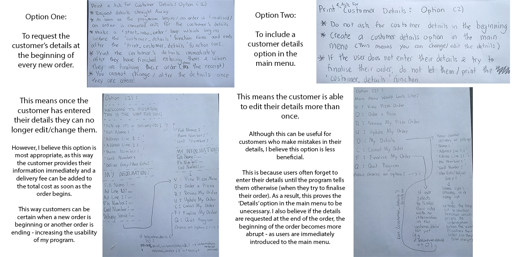
Before I began the planning and coding proccesses for this function/sprint, I made an iterative decision regarding how I would incorporate the customer details (with both options outlined above). Essentially, I chose option one because I liked how it helped identify a clear beginning to the customer's order. A benefit to this decision, is that I did not need to code an unecessary 'Details' option in the main menu - as more often than not users will forget to enter their information (during their order) and proceed to checkout, only to be told they cannot continue without it. A negative consequence of selecting this decision however, is that the user cannot update their information once they have entered it. However, users can navigate to the 'cancel order' option in the main menu to refresh their entire order (including their details) if required.
Git Commits
During my project, as previously mentioned, I refer to Github very regularly. As a result, I am constantly committing/pushing my work - to keep the most updated version of my project saved on the platform. A commit on Github is to be viewed as a snapshot or a milestone of the progress which has been made - with a series of commits resulting in a project's timeline. Through commiting my work onto a separate platform, I am ensuring my progress is being saved, which in the occasion where my laptop is damaged, is extremely helpful. As displayed in the screenshot below, I had intended to commit my work after every sprint. However, sometimes I felt sprints were not necessarily long enough or had so many changes from those previous, resulting in fewer and less regular commits. The most recent commit I have performed was for sprint seven. I aim to make one final commit after completing the 'scan_customer_list' function and adding a 'Finalise' option to the main menu in sprint eight.
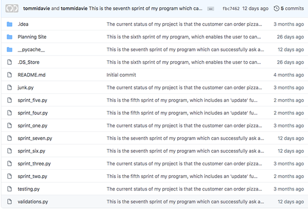
Sprint Seven Reflection:
What has been successful?
- Users can successfully enter their personal information at the beginning of a new order. If a customer confirms the cancellation of a previous order, all of their information is cleared and the 'start_new_order' loop runs again - requesting for the customer's details once more. The customer can select from two options - pick up or delivery. If the customer chooses delivery, a delivery fee of $3 is charged to their total cost and is printed in their receipt (when they review their order). Validations prevent the user from making a large proportion of errors (except those mentioned above). Because the customer's details are requested at the beginning of every new order, users now have clear indications of when an order is beginning and ending (via the cancellation option).
What are the problems?
- As identified, users can make large mistakes in their phone and card numbers as the program reads/recognises them as strings. There is currently no checkout/finalise order option on the main menu which the customer can use to confirm and end their order. Users are still able to have duplicate pizza flavours in their orders. Some validations need tweaking as currently the presentation of the customer's details is not very clean.
Sprint Eight
Aim:
Scan the customer's list for a duplicate pizza. If a duplicate is found, allow the customer to update the pizza's quantity upon request. Create a 'Finalise' order option on the main menu which the customer can use to confirm and end their order.
Sprint Eight Planning Board:
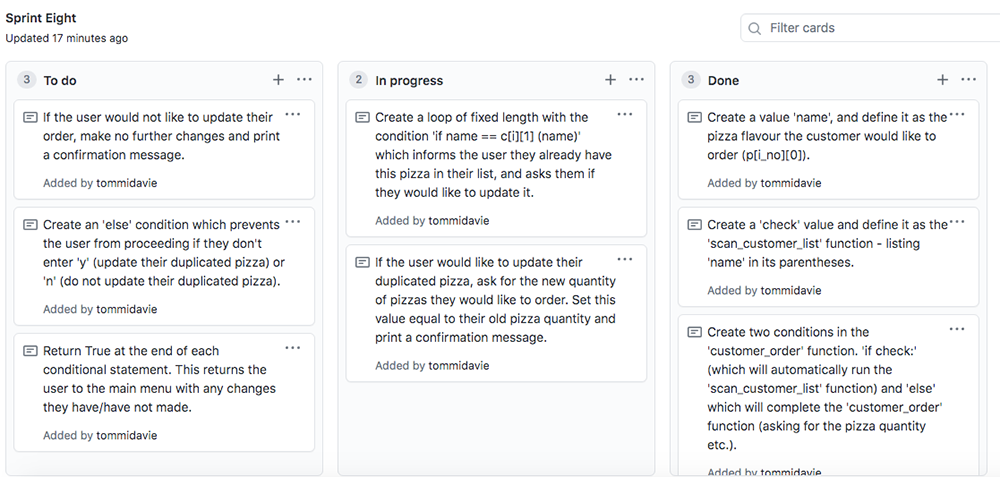
Sprint Eight Test Planning and Code Output:
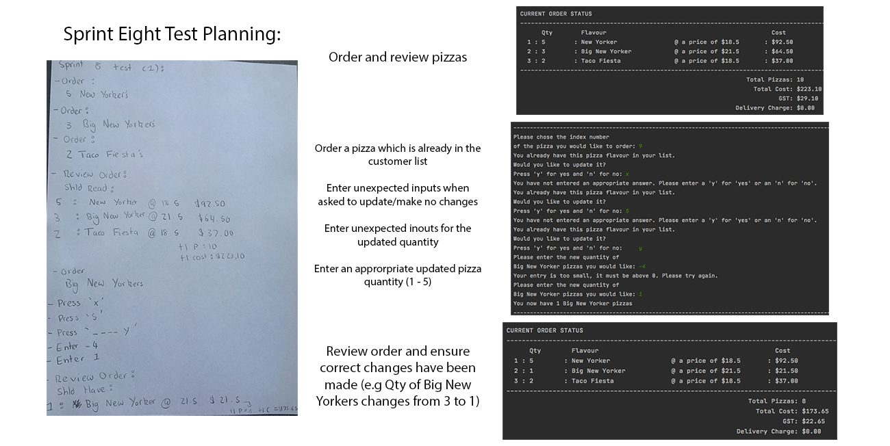
Recorded above is the planning and code output for the eigth sprint of my program. During this sprint I added a 'Finalise' option into the main menu, (tested by a customer below) but have also created a function which scans the customer's list for a duplicate pizza. Seen above I am testing this scanning function. I began by purposefully trying to order a pizza which was already in my list (Big New Yorker). The program immediately recognised this and asked me if I would like to update/edit this pizza, as it already existed in my list. I then proceeded to enter an array of unexpected user inputs, (all of which the program did not accept - due to the newly coded 'y_and_n' validation). Eventually, I entered an appropriate response (1) - recieving a confirmation message from the program, informing me my order had been updated. To be sure this was true, I returned to the main menu and reviewed my order once more. I found that the program had successfully changed my order, with no errors occuring throughout.
Testing My Final Pizza Program On My Mum:
For the final test of my program, I asked my mum to order from Pizzaroo, (as if she was a customer ordering over the phone). Outside sources are always very helpful, as with someone unfamiliar testing my program, there is a much higher likeliness of uncovering errors I have missed along the way. Fortunately, no major errors appeared, however, I did recognise although the customer had cancelled their order, their previous and new customer details were both printed in the final receipt (of the new order) - seen in the screenshot below. I immediately recognised this was because I did not clear the 'customer_details' list in the 'cancel_order' function (I only cleared the customer's pizza list). Thankfully, this meant this error could be easily resolved. I have now ensured the 'cancel_order' function is clearing absolutely everything in the customer's order. Another minor mishap was when I entered a wrong index (index 2 instead of index 3). However, after correcting this mistake, everything ran efficiently, and the customer information and pizza choices were communicated and recorded accurately.
Error in customer details: New and previous customer details were merged and printed in the final receipt (despite an order cancellation)
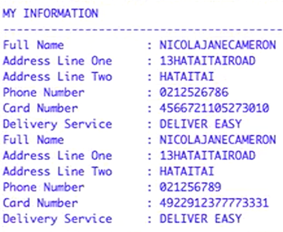The only minor detail I intend to change, is to make a separate validation for the addresses and names - as it is unlikely a customer will enter unecessary spaces (" ") in their name and/or address (unlike phone and card numbers). This is simply as I prefer the presentation of the customer information when the names and addresses can be clearly read - with spaces separating first and last names and two place names. However, as shown throughout the video, whether or not I entered the phone and/or card numbers in separation, (e.g '444 2 1 111 3 4') the information was relayed back to the customer as one whole - with the spaces (" ") discluded from the character count. Although mum did put the new 'scan_customer_list' function to test, I understand it is unlikely for users to order the same pizza more than once - however is still entirely possible and should not be discounted. However, Mum did use the 'Finalise Order' option on the main menu - where she confirmed and ended her order, beginning the 'start_new_order' loop once more, with the program requesting for her personal information again.
Customer Information After Importing Final Validations:
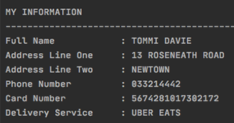
Running Functions Through Python 3 Code Checker:
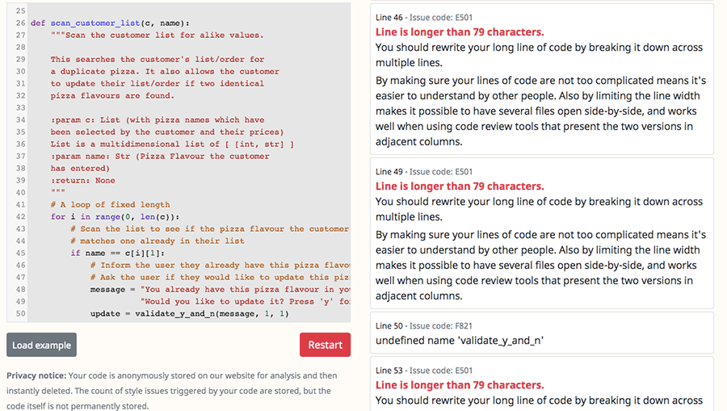
As my code has now advanced with more functions and comments compared to what it was in sprint four, it now surpasses the character limit Python 3 Style Checker can cope with/check through. Consequently, I can only run one or two functions through the code checker at a time, and as recorded above, I decided to put my new function to the test. As my program cannot be submitted as one whole, it is impossible to fix every error identified. However, most errors recognised and continue to be recognised in other functions, regard character lengths (over 79), and white spaces at the ends of lines. Thankfully, these are simple fixes which can be easily accomplished - helping address the relevant implication of sustainability and furture proofing, as I am ensuring my program fits python's various conventions. In saying so, sometimes shortening the character length of a line can generate more issues for the program - resulting in some exceptions throughout my code.
Project Reflection:
What has been successful?
- I have successfully planned, coded and tested a pizza program, which fufills the brief I had intially set out to complete. The Pizzaroo pizza program can successfully receive, store and print a customer's pizza order and their personal details. Supported by various validations which have been imported from a separate file, the program can easily identify and combat unexpected/inappropriate user inputs. Users are able to review their orders, make mulitple changes and even cancel their entire order (with the program wiping all of their previous information and pizza choices). The program can successfully calculate the total price of an order, including GST (and presenting this + additional information in a receipt for the user). If a user tries to order a pizza which already exists in their pizza list, the program will immediately recognise an error, informing the user whilst enabling them to update this flavour upon request. Customers are able to pick between a delvery or pick-up option, with an automatic delivery fee charged to their total price if selected. Finally, users are able to end and begin new orders via the finalise option of the main menu (and the cancel order option) - which enables users to confirm their entire orders and begin new orders (storing no previous information) when requested.
What are the problems?
- Due to the time restraint on this project, it was never going to be possible to complete everything I had planned in my project backlog. For example, I needed to prioritise completing things/creating functions which were essential for the program to run properly, opposed to others which were possibly more entertaining (e.g creating a sides/dessert pizza menu). However, because I focussed on creating components which were essential for the program's functionality, there are very few problems I can identify. One issue which I have previously discussed, includes the phone and card numbers in the customer's details. Both of these values are recognised by the program as string inputs (opposed to integers - which seemed to generate more errors). This can cause issues as the user can enter string a input (letters and/or words) as either their card or phone number. Consequently, if I was given more time or was able to repeat this process, I would most likely create another sprint which targetted and resolved this specific issue.
Relevant Implications:
Usability
The first relevant implication my work has achieved, is usability. This implication embodies the idea that a digital product should be able to recognise, diagnose and recover from errors throughout it's code. The application should correct errors without worrying the user, and restore to itself to it's previous state. Consequently, I have addressed this relevant implication by creating validations which are imported into my code - all of which test the user's input and ensure it is appropriate (under it's given setting) before returning it. A particular example where the user's input is saved from error, (without worrying the user at all) regards the validation which converts all of their string inputs to upper case. This means despite being asked to enter 'Y' or 'N' for example, the user can enter 'Y', 'y', 'N', 'n' and the program will accept all of their answers. In conjunction with this, I have also incorporated ('Back to the main menu') options throughout my code, (such as in the update sub-menu) which enables the program to restore itself to it's previous state, whilst providing the user a route back to the main menu (without completing their function first).
Functionality
The second relevant implication my project particularly focussed on was functionality. The definition of functionality is to have a digital product which is working efficiently and free of bugs. If a platform is functional, it should be able to fufill it's purpose with ease, identifying and preventing errors and unexpected inputs - which could lead to serious issues and crashes in the code. I have addressed this implication by conducting thorough and regular tests for each sprint. This can be seen in all of my paper planning and screen captures (of the code ouputs) for each test - identifying any errors and bugs which have occured. I also conducted two full 'run through' tests with customers (ensuring my program can handle unexpected user inputs in it's entirety). In conjunction with this, I took care in testing each function before intergrating it into my main program. To make this process even quicker, I had test orders saved within my code (which were commented when not in use). Consequently, my program has been designed to successfully highlight and combat expected and unexpected user errors (through vigorous testing processes) - all of which prove it's strength and functionality.
Sustainability Future Proofing
The final relevant implication I have addressed is sustainability and future proofing. Through addressing this implication, I am ensuring the digital product in creation is adaptable, and can be updated regularly with new features. I have addressed this implication by building my program around a function structure - where every new feature/addition is a separate function which can be easily integrated into the main program. With every new function also being a new sprint, this makes any additions/new features easy and efficient processes. Addtionally, I have created doc strings and comments which describe functions and other sections of my code - making my work easily understood by other coders/programmers. This means my program can remain relevant to society, as a variety of coders can understand and edit my work (through the extensive commenting throughout). During this project I also ran my program through a code checker. This made sure I had appropriate tab indents, spacings and line lengths - all of which fit Python conventions. Furthermore, this makes my work recogniseable to other coders who are familiar with this platform, and can therefore evaluate and make useful additions to my work.